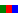

Het paneel is het werkvlak waarop je de schakeling bouwt. Het heeft een raster,
linialen en een titel, en je kunt het opslaan en later weer openen.
Raster en linialen
Het raster helpt om onderdelen netjes uit te lijnen. Terwijl je een object versleept,
springt het magnetisch naar de linialen, zodat onderdelen makkelijk op één lijn komen.
Knop
Naam
Wat doet het?
Raster
Toont of verbergt het raster. Meer mogelijkheden (kleur, afstand) vind je bij Instellingen.
Richtlijnen
Hulplijnen die tijdens het slepen door het midden van het object lopen.
Kader
Teken een kader rond object(en). Zie hieronder.
Titel wijzigen
Vraagt een nieuwe titel voor het paneel.

Balk Invoer / Verwerken / Uitvoer
Toont of verbergt de gekleurde balk bovenaan het paneel. Zonder balk schuiven titel, linialen en werkvlak wat omhoog; de onderdelen blijven staan. Dit wordt per paneel bewaard. Of een nieuw paneel de balk toont, kies je bij Instellingen > Algemeen (standaard niet).
Kaders
Met een kader groepeer je onderdelen die bij elkaar horen, bijvoorbeeld “Ingangen” of
“Teller”. Een kader heeft een opschrift en een kleur.
Klik op Kader.
Sleep op het paneel een rechthoek rond de object(en).
Daarna kun je het kader verslepen en met de grepen op de hoeken groter of kleiner maken.
Rechtsklik op een kader voor het menu:
Menu-item
Wat doet het?
Caption wijzigen
Geeft het kader een ander opschrift.
Kleur blauw / rood / groen
Verandert de kleur van de rand.
Kader verwijderen
Verwijdert het kader. De onderdelen erin blijven staan.
Paneelkeuze
Met Paneelkeuze begin je een nieuw paneel.
Het huidige paneel wordt daarbij leeggemaakt; bewaar het eerst als je het wil houden.
De drie voorbeeldpanelen zijn gebouwd zoals een echte schakeling: bovenaan een
bron van 12 V, links een rode + rail, rechts een blauwe − rail, en
daartussen onderdelen met klemmen, verbonden met draden. Alle onderdelen
staan in het niveau Basis.
Nieuw standaardpaneel
Een leeg paneel om zelf een schakeling te bouwen.
Beslissingspaneel
Een oefenpaneel om met logische poorten een beslissing te laten nemen. Klaar op het paneel staan:
invoer (links): een drukknop, een schakelaar, een LDR (lichtsensor) met een
weerstand van 10 kΩ en een NTC (warmtesensor) met een weerstand van
1000 Ω;
uitvoer (rechts): een lamp van 5 V, een zoemer en een
relais dat met zijn maakcontact een lamp van 12 V schakelt.
Het Beslissingspaneel bij het openen: alles hangt al aan de + en de −, maar naar de poorten loopt nog geen draad.
Al bedraad is alles wat naar de + en de − gaat:
de + rail gaat naar de linkse klem van de drukknop, de schakelaar, de LDR en de NTC;
elke sensor gaat via zijn weerstand naar de − rail: samen vormen ze een
spanningsdeler;
de rechtse klem van de lamp van 5 V, van de zoemer en van de spoel van het relais gaat naar de − rail;
contact C van het relais hangt aan de + rail, het maakcontact aan de lamp van 12 V, en die lamp aan de
− rail.
De poorten hebben geen draad naar de + of de − nodig: ze krijgen hun voeding
onzichtbaar.
Jij legt de signaaldraden (zie Verbindingen): van de invoer naar de ingang van
een poort, en van de uitgang van een poort naar de uitvoer.
Bij de drukknop en de schakelaar vertrekt de draad aan de rechtse klem.
Bij een sensor vertrekt hij ook aan de rechtse klem, tussen de sensor en zijn weerstand. Daar zitten dan twee draden.
De uitgang van een poort verbind je met de linkse klem van de lamp van 5 V, de zoemer of de spoel van het relais.
Een voorbeeld: de zoemer gaat af als het warm is en de schakelaar aan staat.
Trek een draad van de rechtse klem van de NTC naar ingang A1 van de EN-poort.
Trek een draad van de rechtse klem van de schakelaar naar ingang A2.
Trek een draad van uitgang A van de EN-poort naar de linkse klem van de zoemer.
Start de simulatie, klik op de hendel van de schakelaar en sleep de schuifknop onder de NTC naar 60 °C:
de zoemer gaat af. Bij 20 °C, of met de schakelaar open, zwijgt hij.
Het licht of de temperatuur verander je met de schuifknop onder de sensor: sleep de knop, of klik ernaast voor
één stap (1 % licht of 1 °C). Dat kan ook tijdens de simulatie.
Nog twee om te proberen:
Een nachtlampje: de LDR naar ingang N1 van de NIET-poort, uitgang N naar de lamp van 5 V. De lamp
brandt als het donker is (15 % licht) en dooft bij 80 % licht. Zie ook les 6.
Een groot toestel schakelen: de drukknop naar ingang O1 van de OF-poort, uitgang O naar de spoel van
het relais. Zolang je drukt, trekt het relais aan en brandt de lamp van 12 V. Zie ook
les 7.
Tellerpaneel
Een werkend voorbeeld van een teller. Alle draden liggen er al: het paneel
werkt meteen.
Het Tellerpaneel: de impulsgenerator en de onderste drukknop gaan via een OF-poort naar de telingang Te; de bovenste drukknop zet de teller terug op 0.
De + rail gaat naar de linkse klem van de twee drukknoppen en van de
impulsgenerator.
De impulsgenerator gaat naar ingang O1 van een OF-poort, de onderste
drukknop naar O2. De uitgang van de OF-poort gaat naar de telingang Te: de teller telt de pulsen van de
generator of elke druk op de knop.
De bovenste drukknop gaat naar Re: hij zet de teller terug op 0.
De uitgangen T8, T4, T2 en T1 van de teller gaan met vier draden naar de ingangen
8, 4, 2 en 1 van het 7-segmentdisplay, dat de stand toont.
Het display heeft geen klemmen: het zit ingeplugd op de − rail.
Start de simulatie en druk een paar keer op de onderste drukknop: de teller gaat telkens één verder. Klik daarna
op het kastje van de impulsgenerator: het springt op aan en de teller loopt vanzelf. Klik nog eens om te
stoppen, en druk op de bovenste drukknop om weer bij 0 te beginnen. Meer uitleg vind je in
les 8.
Geheugenpaneel
Een werkend voorbeeld van een geheugen, dezelfde schakeling als in
les 9. Ook hier liggen alle draden er al.
De teller bovenaan kiest het adres. De bovenste drukknop (op Re) zet
het adres terug op 0, de tweede (op Te) gaat één adres verder. De schakelaar eronder (op A16) telt er
16 bij: zo kom je bij de adressen 16 tot 31.
De dipschakelaar zet een getal van 0 tot 15 klaar op de data-ingangen
D8, D4, D2 en D1. Bij het openen staat hij op 5.
De onderste drukknop (op S, schrijven) bewaart dat getal in het gekozen adres.
Het bovenste display toont het adres, het onderste de inhoud van dat adres. Beide displays zitten
ingeplugd op de − rail.
Start de simulatie. Klik op de schuifjes van de dipschakelaar om een getal te kiezen en druk op de onderste
drukknop om het op te slaan. Ga daarna met de tweede drukknop één adres verder en met de bovenste terug naar 0:
het getal staat er nog.
Openen en opslaan
Knop
Naam
Wat doet het?
Paneel opslaan
Bewaart alle onderdelen, draden en hun instellingen in een .lpl-bestand. Standaard in de map panels naast het programma.
Open paneel
Laadt een bewaard paneel. Het huidige paneel wordt vervangen.
Schermkopie
Kopieert een afbeelding van het paneel naar het klembord.
Na openen of opslaan staat de naam van het bestand als titel boven het paneel. Verander je daarna
iets, dan krijgt de titel een sterretje (bijvoorbeeld beslissen *). Open je dan een ander paneel,
kies je een ingebouwd paneel of sluit je Logic af, dan vraagt Logic eerst of je de wijzigingen wil
bewaren (Ja, Nee of Annuleren).


 Paneelkeuze begin je een nieuw paneel.
Het huidige paneel wordt daarbij leeggemaakt; bewaar het eerst als je het wil houden.
Paneelkeuze begin je een nieuw paneel.
Het huidige paneel wordt daarbij leeggemaakt; bewaar het eerst als je het wil houden.